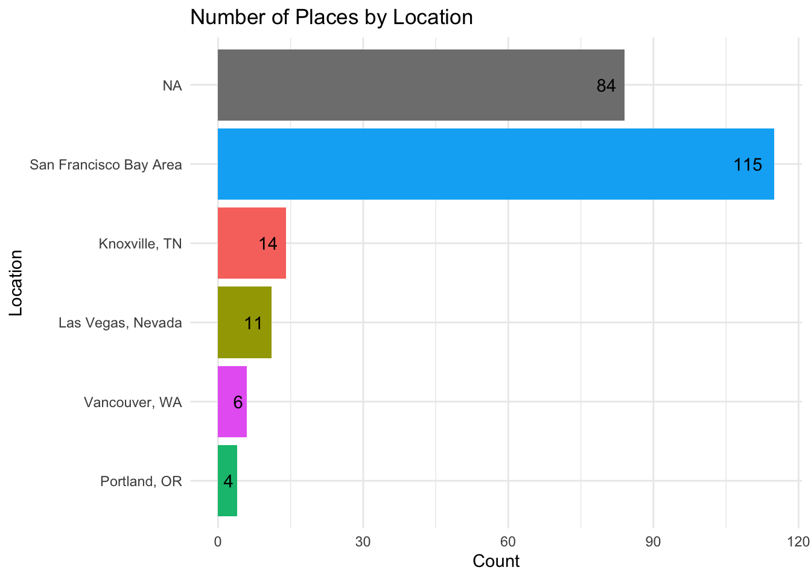
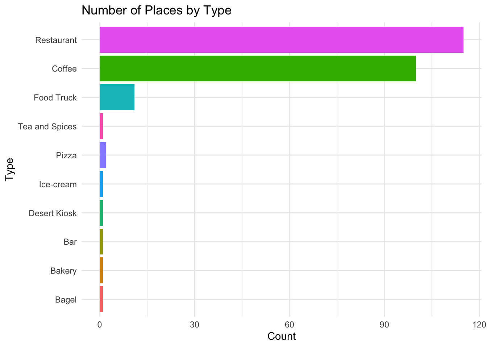
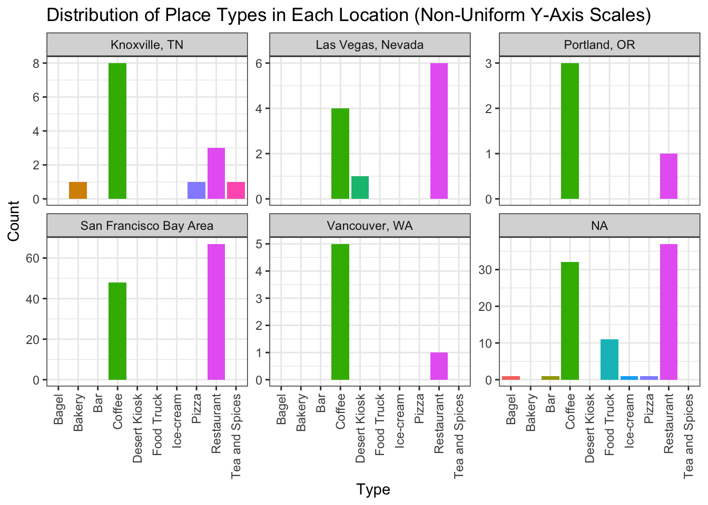

setwd("/Users/harshvardhan/Documents/Useful-Files/Misc/Map of Tiny Perfect Things/map-of-tiny-perfect-things/")02_add_new_places
Purpose
This notebook is used for adding new places to the map. Every once in a while — or if we get Threads like popularity then every day — we would add new places to the Map. This notebook has functions that:
- read in the Google sheet and then creates a tibble of the places
- Reads in the existing the master,
- Finds which places do not have Google data yet,
- Use Google Places API to get information for those places
- Update master data with new data
Import Libraries etc.
First step is to load the packages.
# install and load necessary packages
# install.packages(c("googledrive", "googlesheets4"))
library(googledrive)
library(googlesheets4)
Attaching package: 'googlesheets4'The following objects are masked from 'package:googledrive':
request_generate, request_makelibrary(tidyverse)── Attaching packages ─────────────────────────────────────── tidyverse 1.3.2
──✔ ggplot2 3.4.0 ✔ purrr 1.0.1
✔ tibble 3.1.8 ✔ dplyr 1.1.0
✔ tidyr 1.3.0 ✔ stringr 1.5.0
✔ readr 2.1.4 ✔ forcats 1.0.0
── Conflicts ────────────────────────────────────────── tidyverse_conflicts() ──
✖ dplyr::filter() masks stats::filter()
✖ dplyr::lag() masks stats::lag()
✖ googlesheets4::request_generate() masks googledrive::request_generate()
✖ googlesheets4::request_make() masks googledrive::request_make()library(googleway)Authenticating with Google Sheets:
# set your googledrive token
# Note: You'll have to authenticate your session the first time you use this
# Simply run the following function and follow the instructions
# drive_auth()Getting API right:
# API key function
read_api_key = function(file_path) {
# returning the first line of the text file at the file_path
return(readLines(file_path)[1])
}# API Key (Harsh's API Key)
api_key = read_api_key("google_places_api_key.txt")
# load googleway
library(googleway)
set_key(key = api_key)Getting the sheet
# define the URL of your Google Sheet
url = "https://docs.google.com/spreadsheets/d/1UC2EvXsafSjDkNNZSnC8eB_FPwyy1KenFfhUveoKEoc/edit#gid=1196848595"# get the ID of the Google Sheet from the URL
# capturing the sheet id to use with drive_get()
sheet_id = sub(".*/d/(.*)/.*", "\\1", url)
# get info about the Google Sheet
sheet_info = drive_get(id = sheet_id)! Using an auto-discovered, cached token. To suppress this message, modify your code or options to clearly consent to
the use of a cached token. See gargle's "Non-interactive auth" vignette for more details: <]8;;https://gargle.r-lib.org/articles/non-interactive-auth.htmlhttps://gargle.r-lib.org/articles/non-interactive-auth.html]8;;>ℹ The googledrive package is using a cached token for ']8;;mailto:hvsc1708@gmail.comhvsc1708@gmail.com]8;;'.Auto-refreshing stale OAuth token.sheet_info# A dribble: 1 × 3
name id drive_resource
<chr> <drv_id> <list>
1 The Mapping Project 1UC2EvX… <named list [36]>Reading each sheet
Define the sheets to read
sheet_names = c("Dea - Bay Area", "Dea - NYC + DC + NJ", "Dea - PNW", "Dea - Vegas", "Harsh - Knoxville", "Harsh - PNW", "Meenal - Bangalore") Function to read in the Google sheet and create a tibble of the places
read_google_sheet = function(url,
sheet_name,
cols_to_keep = c("name", "type", "location",
"creators_rec", "notes")) {
df = read_sheet(url, range = sheet_name) %>%
janitor::clean_names() %>%
select(all_of(cols_to_keep)) %>%
mutate(sheet_name = sheet_name)
return(df)
}# Apply the function to each sheet and combine into a single data frame
all_data = purrr::map_dfr(sheet_names, ~ read_google_sheet(url, .))! Using an auto-discovered, cached token. To suppress this message, modify your code or options to clearly consent to
the use of a cached token. See gargle's "Non-interactive auth" vignette for more details: <]8;;https://gargle.r-lib.org/articles/non-interactive-auth.htmlhttps://gargle.r-lib.org/articles/non-interactive-auth.html]8;;>ℹ The googlesheets4 package is using a cached token for ']8;;mailto:hvsc1708@gmail.comhvsc1708@gmail.com]8;;'.Auto-refreshing stale OAuth token.✔ Reading from "The Mapping Project".✔ Range ''Dea - Bay Area''.✔ Reading from "The Mapping Project".✔ Range ''Dea - NYC + DC + NJ''.✔ Reading from "The Mapping Project".✔ Range ''Dea - PNW''.✔ Reading from "The Mapping Project".✔ Range ''Dea - Vegas''.✔ Reading from "The Mapping Project".✔ Range ''Harsh - Knoxville''.✔ Reading from "The Mapping Project".✔ Range ''Harsh - PNW''.✔ Reading from "The Mapping Project".✔ Range ''Meenal - Bangalore''.Function to read in the existing master data CSV file provided a path
read_master_data = function(file_path) {
df = read_csv(file_path, stringsAsFactors = FALSE) %>%
as_tibble()
return(df)
}master_data = read_csv("master_data.csv")Rows: 234 Columns: 12
── Column specification ────────────────────────────────────────────────────────
Delimiter: ","
chr (8): name, type, location, creators_rec, notes, sheet_name, address, goo...
dbl (4): rating, user_ratings_total, lat, lng
ℹ Use `spec()` to retrieve the full column specification for this data.
ℹ Specify the column types or set `show_col_types = FALSE` to quiet this message.master_data# A tibble: 234 × 12
name type location creators_rec notes sheet_name address rating
<chr> <chr> <chr> <chr> <chr> <chr> <chr> <dbl>
1 Blue Bottle Coff… San Fra… <NA> <NA> Dea - Bay… 199 Su… 4.3
2 Cafenated Coffee Coff… San Fra… <NA> <NA> Dea - Bay… 2085 V… 4.3
3 Victory Point Coff… San Fra… Yes "Goo… Dea - Bay… 1797 S… 4.7
4 My Coffee Roaste… Coff… San Fra… Yes "Fai… Dea - Bay… 2080 M… 4.8
5 Artis Coff… San Fra… <NA> <NA> Dea - Bay… 3200 B… 5
6 Hidden Cafe Coff… San Fra… <NA> <NA> Dea - Bay… 1250 A… 4.8
7 Timeless Cafe Coff… San Fra… <NA> <NA> Dea - Bay… 85 Web… 4.6
8 Free Speech Move… Coff… San Fra… <NA> <NA> Dea - Bay… 3rd Fl… 4.3
9 Rasa Cafe Coff… San Fra… <NA> <NA> Dea - Bay… 1379 4… 4.6
10 States Coff… San Fra… <NA> <NA> Dea - Bay… San Fr… NA
# ℹ 224 more rows
# ℹ 4 more variables: user_ratings_total <dbl>, google_maps_link <chr>,
# lat <dbl>, lng <dbl>Which places do not have Google data yet?
I would check for all columns.
missing_data = master_data %>%
filter(
is.na(address) |
is.na(rating) |
is.na(user_ratings_total) |
is.na(google_maps_link) | is.na(lat) | is.na(lng)
)
missing_data# A tibble: 86 × 12
name type location creators_rec notes sheet_name address rating
<chr> <chr> <chr> <chr> <chr> <chr> <chr> <dbl>
1 States Coff… San Fra… <NA> <NA> Dea - Bay… San Fr… NA
2 Raleigh Rest… San Fra… <NA> <NA> Dea - Bay… <NA> NA
3 Ralph's Coff… <NA> <NA> Inte… Dea - NYC… <NA> NA
4 Cafe Grumpy Coff… <NA> <NA> Cute… Dea - NYC… <NA> NA
5 %Arabica Coff… <NA> <NA> Grea… Dea - NYC… <NA> NA
6 Black Fox Coffee Coff… <NA> Yes Fave… Dea - NYC… <NA> NA
7 Cafe Patoro Coff… <NA> Yes Quai… Dea - NYC… <NA> NA
8 Coffee Project Coff… <NA> <NA> Deco… Dea - NYC… <NA> NA
9 Cortaditos Coff… <NA> <NA> Cuba… Dea - NYC… <NA> NA
10 Joe Coffee Compa… Coff… <NA> Yes Coff… Dea - NYC… <NA> NA
# ℹ 76 more rows
# ℹ 4 more variables: user_ratings_total <dbl>, google_maps_link <chr>,
# lat <dbl>, lng <dbl>Function to get information from Google Maps, given place name and area.
get_place_info = function(place_name, area) {
if (is.na(area)){
print(paste0("Area name not provided for place ", place_name))
return(
tibble(
name = place_name,
address = NA,
rating = NA,
user_ratings_total = NA,
google_maps_link = NA,
lat = NA,
lng = NA
))
}
# Construct the search query
query = paste0(place_name, " ", area)
# Perform a Google Places search
result_search = google_places(search_string = query)
if (length(result_search$results) == 0) {
print(paste0("Couldn't find place ", place_name, " in ", area))
return(
tibble(
name = place_name,
address = NA,
rating = NA,
user_ratings_total = NA,
google_maps_link = NA,
lat = NA,
lng = NA
)
)
} else {
# Extract the information
print(paste0("Working on ", place_name, " ", area))
result_details = result_search$results[1,]
place_id = result_details$place_id
address = result_details$formatted_address
rating = result_details$rating
user_ratings_total = result_details$user_ratings_total
google_maps_link = paste0("https://www.google.com/maps/search/?api=1&query=", URLencode(address), "&query_place_id=", place_id)
lat = result_details$geometry$location$lat
lng = result_details$geometry$location$lng
return(
tibble(
name = place_name,
address = address,
rating = rating,
user_ratings_total = user_ratings_total,
google_maps_link = google_maps_link,
lat = lat,
lng = lng
)
)
}
}Use Google Places API to get information for those place
new_info = missing_data %>%
split(1:nrow(.)) %>%
map_dfr(~ get_place_info(.$name, .$location)) # purrrr, says Hadley's cat[1] "Working on States San Francisco Bay Area"
[1] "Couldn't find place Raleigh in San Francisco Bay Area"
[1] "Area name not provided for place Ralph's"
[1] "Area name not provided for place Cafe Grumpy"
[1] "Area name not provided for place %Arabica"
[1] "Area name not provided for place Black Fox Coffee"
[1] "Area name not provided for place Cafe Patoro"
[1] "Area name not provided for place Coffee Project"
[1] "Area name not provided for place Cortaditos"
[1] "Area name not provided for place Joe Coffee Company"
[1] "Area name not provided for place Hungry Ghost"
[1] "Area name not provided for place Devocion"
[1] "Area name not provided for place Lillo Cucina Italiana"
[1] "Area name not provided for place YUBU"
[1] "Area name not provided for place L'Industrie"
[1] "Area name not provided for place Sam's Falafel"
[1] "Area name not provided for place Leo's Bagel"
[1] "Area name not provided for place Van Leeuwen Ice Cream"
[1] "Area name not provided for place Pita Yeero"
[1] "Area name not provided for place Orale! Mexican Kitchen"
[1] "Area name not provided for place Khiladi NYC"
[1] "Area name not provided for place Mariscos El Submarino"
[1] "Area name not provided for place Nada"
[1] "Area name not provided for place Spicy Moon"
[1] "Area name not provided for place Taqueria Al Pastor"
[1] "Area name not provided for place Miss Ada"
[1] "Area name not provided for place For Five Coffee"
[1] "Area name not provided for place Gregorys Coffee"
[1] "Area name not provided for place George's King of Falafel and Cheesesteak"
[1] "Area name not provided for place The Exchange Saloon"
[1] "Area name not provided for place Eye Street Grill"
[1] "Area name not provided for place Stumptown Coffee"
[1] "Area name not provided for place Heart Coffee Roasters"
[1] "Area name not provided for place Never Coffee"
[1] "Area name not provided for place Sunny Day"
[1] "Area name not provided for place Sisters Coffee Company"
[1] "Area name not provided for place Rain or Shine"
[1] "Area name not provided for place Tov Coffee"
[1] "Area name not provided for place Barista Coffee"
[1] "Area name not provided for place Dandelion Teahouse"
[1] "Area name not provided for place Terrain Coffee"
[1] "Area name not provided for place Pajaro"
[1] "Area name not provided for place Good Coffee"
[1] "Area name not provided for place Coava"
[1] "Area name not provided for place Nossa Familia"
[1] "Area name not provided for place Case Study Coffee"
[1] "Area name not provided for place Queue Coffee"
[1] "Area name not provided for place Super Joy Coffee"
[1] "Area name not provided for place Upper Left Coffee"
[1] "Area name not provided for place Ovation Coffee"
[1] "Area name not provided for place Deadstock Coffee"
[1] "Area name not provided for place Little Italy's Trattoria"
[1] "Area name not provided for place La Provence"
[1] "Area name not provided for place Voodoo Doughnuts"
[1] "Area name not provided for place Foode Cafe"
[1] "Area name not provided for place Lan Su"
[1] "Area name not provided for place Kornblatt's Deli"
[1] "Area name not provided for place Salt and Straw"
[1] "Area name not provided for place Mirisata"
[1] "Area name not provided for place Por Que No"
[1] "Area name not provided for place Hopworks"
[1] "Area name not provided for place Abhiruchi Indian Cuisine"
[1] "Area name not provided for place Nola Doughnuts"
[1] "Area name not provided for place Flying Fish Company"
[1] "Area name not provided for place Dediko"
[1] "Area name not provided for place Joe Brown's Cafe"
[1] "Area name not provided for place Breakside"
[1] "Area name not provided for place Ranch PDX"
[1] "Area name not provided for place Little Conejo"
[1] "Area name not provided for place Nonavo Pizza"
[1] "Area name not provided for place Chutney Indian Cuisine"
[1] "Area name not provided for place La Sorrentina"
[1] "Area name not provided for place Grassa"
[1] "Area name not provided for place McMenamins"
[1] "Area name not provided for place Mio Sushi"
[1] "Area name not provided for place Amaro's Table Downtown"
[1] "Area name not provided for place Gustav"
[1] "Area name not provided for place Petunia"
[1] "Area name not provided for place Altengartz"
[1] "Area name not provided for place Mumbo Gumbo"
[1] "Area name not provided for place Ash Wood Fired"
[1] "Area name not provided for place El Pilon"
[1] "Area name not provided for place Viking Soul Food"
[1] "Area name not provided for place Gourmet on the Go"
[1] "Area name not provided for place Tall Boy Fish and Chips"
[1] "Area name not provided for place Bobablastic"Update master data with new data
add_new_rows = function(df1, df2, cols_to_match = c("name")) {
# Use anti_join to find rows in df2 that are not in df1
new_rows = df2 %>%
dplyr::anti_join(df1, by = cols_to_match)
# Add these new rows to df1
df1 = rbind(df1, new_rows)
return(df1)
}master_data %>%
add_new_rows(new_info) %>%
distinct(name)# A tibble: 234 × 1
name
<chr>
1 Blue Bottle
2 Cafenated Coffee
3 Victory Point
4 My Coffee Roastery
5 Artis
6 Hidden Cafe
7 Timeless Cafe
8 Free Speech Movement
9 Rasa Cafe
10 States
# ℹ 224 more rowsInvestigations for repeated names.
Checking if any names are repeated. It is critical to have unique names of the places.
# Find names that are repeated
master_data %>%
group_by(name) %>%
summarise(count = n()) %>%
filter(count > 1)# A tibble: 0 × 2
# ℹ 2 variables: name <chr>, count <int>Adding ID
I think its unreasonable to assume that names of places will be unique forever. Languages are full of “false friends” — words in two languages that look or sound similar but have different meanings.
Unrelated but some examples:
The word “gift” in English means a present or something given, while in German, “Gift” means poison.
The word “kiss” in English refers to an act of affection, while in Swedish, “kiss” means pee or urine.
The word “blessed” in English generally means being favored, fortunate, or holy. However, in Portuguese, “blessed” translates to “abençoado.”
The word “molesto” in Spanish translates to “annoying” or “bothersome,” but in Italian, “molesto” means “ill” or “unwell.”
The word “rude” in English typically means impolite or offensive. However, in French, “rude” translates to “rough” or “tough.”
Anyway, this function will ID.
add_unique_id = function(df) {
# Check if unique_id column already exists
if (!"unique_id" %in% names(df)) {
# If not, create it
df = df %>%
# Arrange by location to ensure consistency
arrange(location) %>%
# Create an abbreviation for the location and remove special characters
mutate(location_abbr = gsub("[^[:alnum:]]", "",
abbreviate(location, minlength = 4))) %>%
# Create a group index
group_by(location_abbr) %>%
mutate(id_num = row_number()) %>%
# Combine abbreviation and index into unique_id
mutate(unique_id = paste(location_abbr,
sprintf("%04d", id_num), sep = "_")) %>%
# Remove temporary columns
select(-location_abbr,-id_num)
}
return(df)
}# Call the function
master_data_updated = add_unique_id(master_data) %>%
# bringing unique id to front
select(unique_id, name, location, everything())Adding missing grouping variables: `location_abbr`master_data_updated# A tibble: 234 × 14
# Groups: location_abbr [6]
unique_id name location location_abbr type creators_rec notes sheet_name
<chr> <chr> <chr> <chr> <chr> <chr> <chr> <chr>
1 KTN_0001 Golden … Knoxvil… KTN Coff… Yes A de… Harsh - K…
2 KTN_0002 Frothy … Knoxvil… KTN Coff… Yes The … Harsh - K…
3 KTN_0003 French … Knoxvil… KTN Rest… <NA> Whil… Harsh - K…
4 KTN_0004 Coffee … Knoxvil… KTN Coff… <NA> Know… Harsh - K…
5 KTN_0005 HoneyBe… Knoxvil… KTN Coff… Yes An i… Harsh - K…
6 KTN_0006 Jacks C… Knoxvil… KTN Coff… <NA> An u… Harsh - K…
7 KTN_0007 Spice a… Knoxvil… KTN Tea … Yes An o… Harsh - K…
8 KTN_0008 Wild Lo… Knoxvil… KTN Bake… <NA> A sa… Harsh - K…
9 KTN_0009 Mahalo … Knoxvil… KTN Coff… Yes Expe… Harsh - K…
10 KTN_0010 Capycab… Knoxvil… KTN Coff… <NA> A we… Harsh - K…
# ℹ 224 more rows
# ℹ 6 more variables: address <chr>, rating <dbl>, user_ratings_total <dbl>,
# google_maps_link <chr>, lat <dbl>, lng <dbl>Re-write Master Data with New Information
master_data_updated %>%
write_csv(file = "master_data.csv",
na = "")Which cities are most represented?
# Create a sorted bar plot for 'location'
master_data_updated %>%
count(location) %>%
ggplot(aes(reorder(location, n), n, fill = location)) +
geom_bar(stat = "identity") +
geom_text(aes(label = n), hjust = 1.4) +
coord_flip() +
theme_minimal() +
labs(x = "Location",
y = "Count",
title = "Number of Places by Location",
fill = "Location") +
guides(fill = FALSE)Warning: The `<scale>` argument of `guides()` cannot be `FALSE`. Use "none" instead as
of ggplot2 3.3.4.
What kind of places are most represented?
# Create a sorted bar plot for 'type'
master_data_updated %>%
count(type) %>%
ggplot(aes(reorder(type, n), n, fill = type)) +
geom_bar(stat = "identity") +
#geom_text(aes(label = n), hjust = -0.3) +
coord_flip() +
theme_minimal() +
guides(fill = FALSE) +
labs(x = "Type",
y = "Count",
title = "Number of Places by Type")
In summary…
master_data_updated %>%
ggplot(aes(x = type)) +
geom_bar(aes(fill = type)) +
facet_wrap( ~ location, scales = "free_y") +
labs(x = "Type",
y = "Count",
title = "Distribution of Place Types in Each Location (Non-Uniform Y-Axis Scales)",
fill = "Type") +
theme_bw() +
theme(axis.text.x = element_text(
angle = 90,
vjust = 0.5,
hjust = 1
),
legend.position = "none")